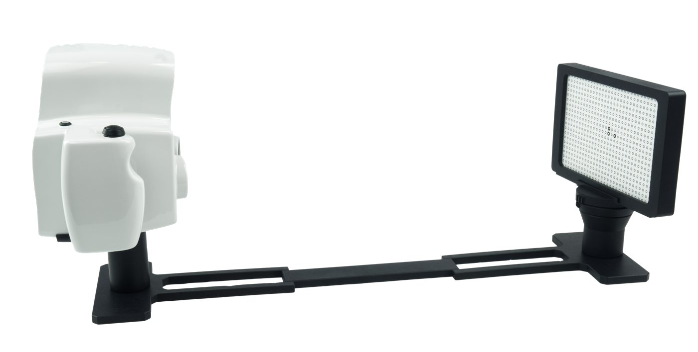
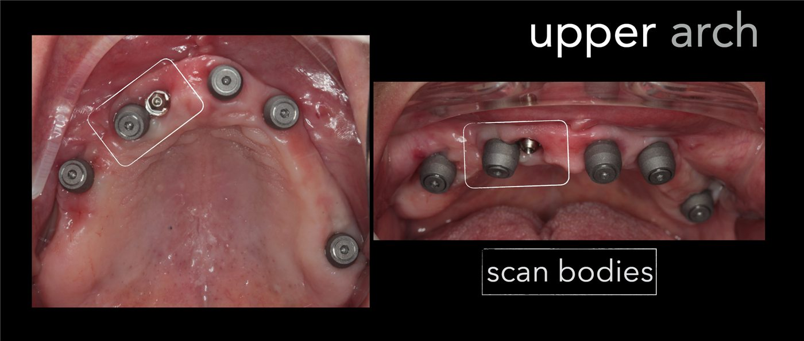
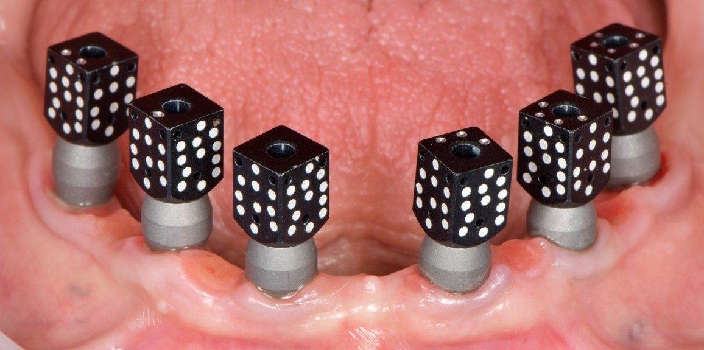
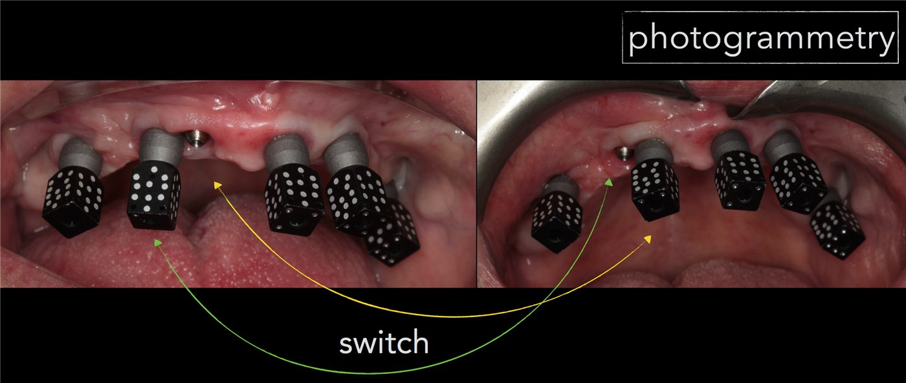
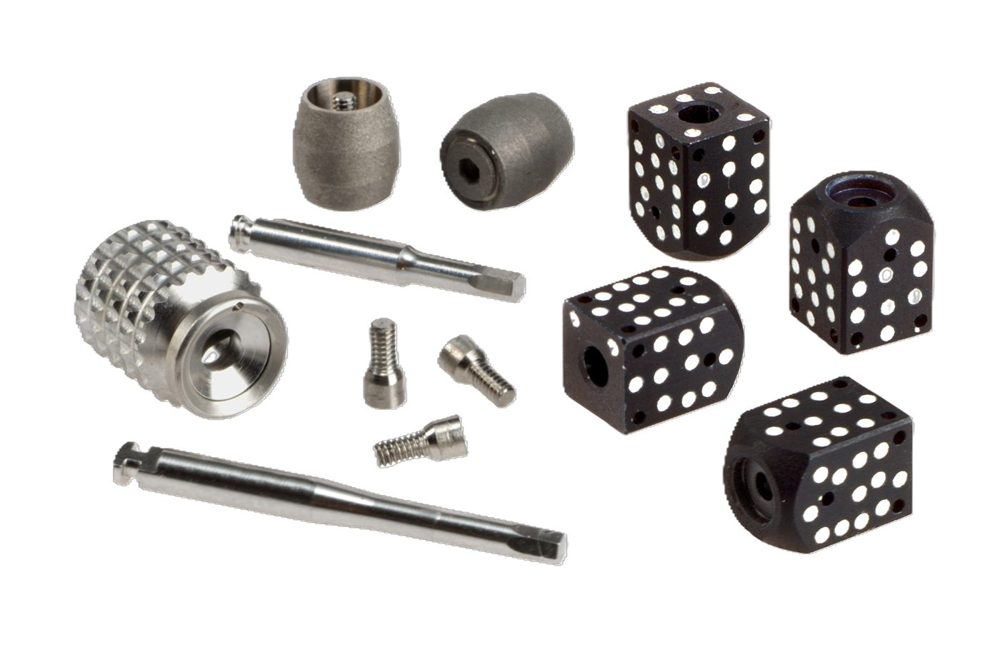
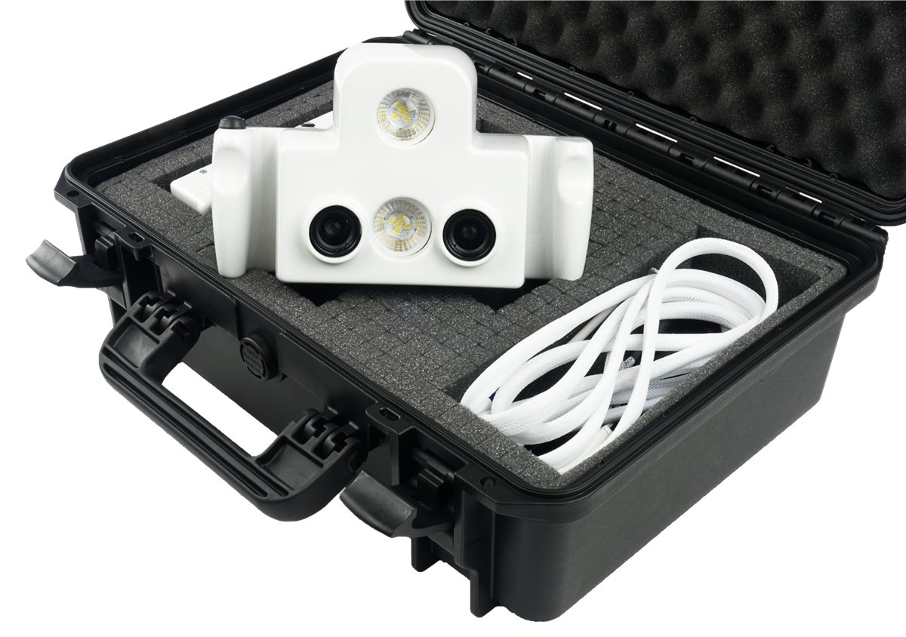
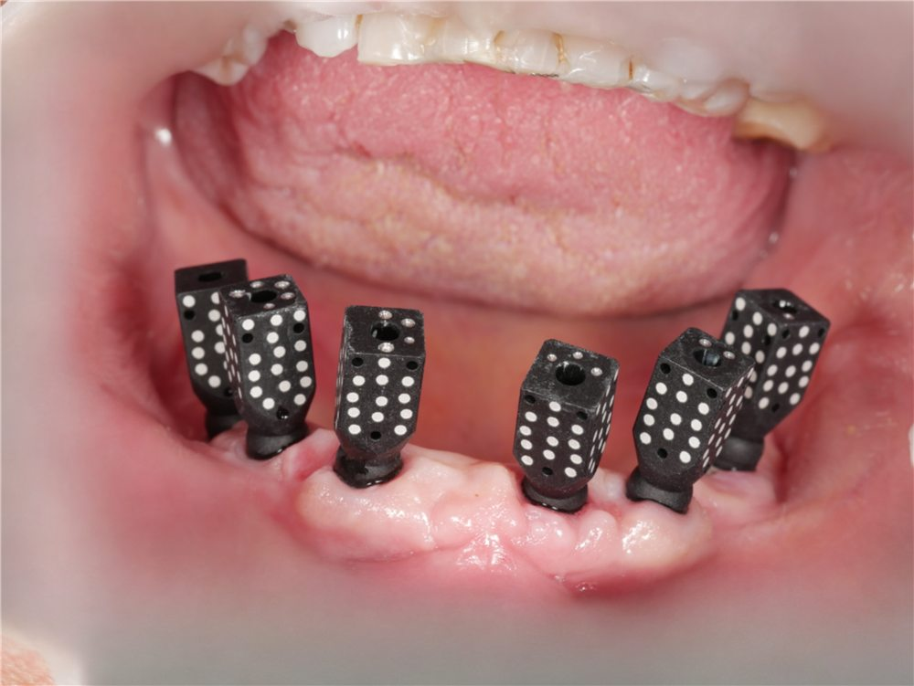
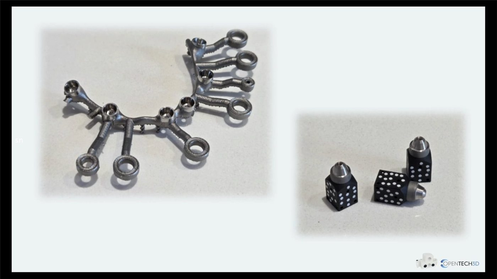
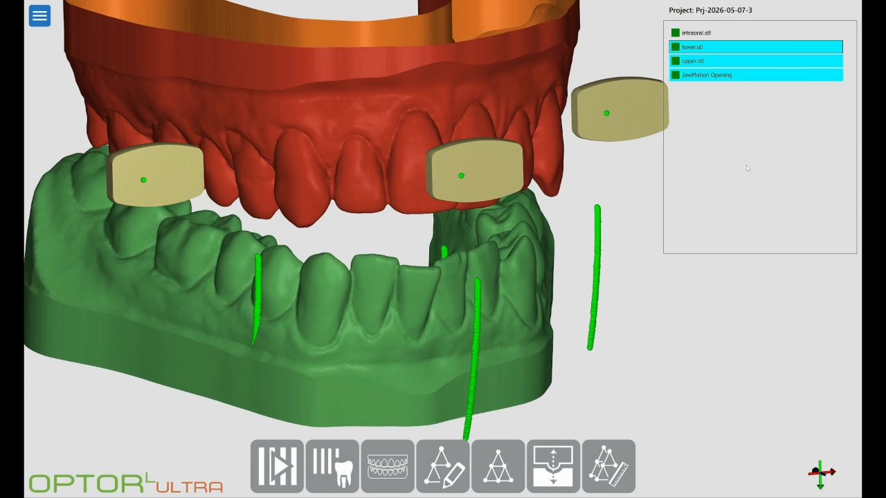

Drag to rotate
Open Tech 3D · 3Dots kit
3D render · components on the implant
The 3D visualisation requires a browser with WebGL support.
3D render · calibration
Calibration

Calibration kit · Open Tech 3DThe 3D visualisation requires a browser with WebGL support.
3D render · IOS scan with titanium bases

Bases on MUAs · Dr L. LavorgnaThe 3D visualisation requires a browser with WebGL support.
3D render · coded markers in diamond orientation

3Dots markers · Dr G. DallariThe 3D visualisation requires a browser with WebGL support.
3D render · stereo acquisition
Ready
The 3D visualisation requires a browser with WebGL support.
3D render · Optor L Ultra
The 3D visualisation requires a browser with WebGL support.
Case: maxilla, 6 implants

Two implants very close together Marker moved, additional capture Dr Luca Lavorgna3D render · matching to the bases
The 3D visualisation requires a browser with WebGL support.
3Dots kit


Titanium: any sterilisation · ergal: wrapped in gauze The device goes back into its caseMost common errors
01No calibrationbefore every clinical day
02IOS scan without basesnothing to match the positions to
03Scan body does not match the MUAMUA profiles differ
04Marker autoclaved without gauzewrap every part
05Wrong distance or motionapprox. 35 cm, arc approx. ±15°
06Close implants forcedadditional capture + Align

New · Reverse Scanbody

New in 2026New · Jaw Motion

New in 2026Optor L Ultra screen recording (sped up)
00 / 13
Keyboard: ← →